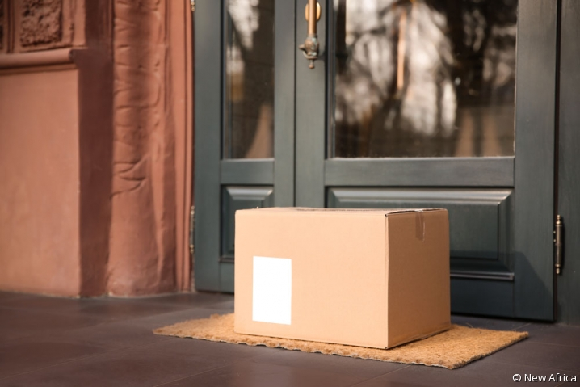

Vous avez ouvert la porte puis vous constatez qu'il n'y a absolument personne. Vous remarquez uniquement la présence d'un paquet devant votre porte. Intrigué(e), vous récupérez le paquet. Vous hésitez à ouvrir le paquet seul, ou bien appeler un ami pour qu'il vienne voir la situation.
Vous avez ouvert le paquet puis vous voyez qu'il y a un coffre à l'intérieur. Ce coffre parait ancien et vous ne souhaitez pas l'abimer mais vous voulez quand même savoir ce qu'il y a dedans. Étrangement, le coffre n'était pas verouillé et une fois ouvert, vous y trouvez une lettre ancienne ainsi qu'une carte.
Vous avez appelé un ami pour qu'il vienne examiner ce colis douteux avec vous. Vous avez décidé d'ouvrir le paquet puis vous y trouvez un coffre ancien. Vous souhaitez l'ouvrir mais votre ami refuse et affirme qu'il vaudrait mieux le remettre aux autorités compétentes.